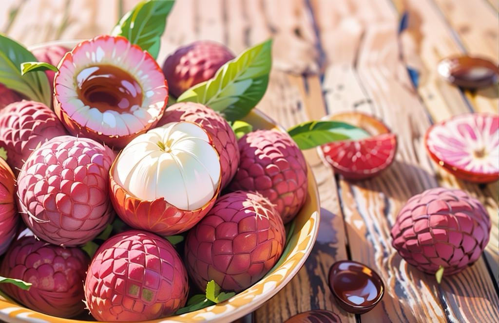

ยินดีต้อนรับ
นายสิรภพ หน่อคำหล้า จัดทำเว็บไซต์ส่วนบุคคลนี้เพื่อแสดงถึงข้อมูลเกี่ยวกับตัวเอง โดยมีข้อมูลทั่วไป ประวัติการศึกษา ประวัติการทำงาน กิจกรรมการท่องเที่ยวและความภาคภูมิใจ
เครื่องดื่มที่ชอบ
กาแฟดำ หรืออีกชื่อตามสไตล์ตะวันตก คืออเมริกาโน่เป็นกาแฟสดที่ได้มาจากการชงด้วยกาแฟคั่วบด หรือจะเป็นกาแฟซองธรรมดาที่ไม่ได้เติมนมหรือน้ำตาลลงไป ซึ่งหลักๆ จะเป็นเอสเปรสโซ่ 1 ช็อตกับน้ำเพื่อให้เจือจางสำหรับแบบร้อน แต่แบบเย็นอาจจะมีการผสมน้ำเชื่อมเพิ่มรสหวานลงไปด้วย
การ์ตูนที่ชื่นชอบ
วันพีซ เป็น การ์ตูนญี่ปุ่นเขียนโดย เออิจิโระ โอดะ เรื่องราวของการตามหา "วันพีซ" โดยผู้ที่ได้มาครอบครองจะได้เป็นจ้าวแห่งโจรสลัด เริ่มลงตีพิมพ์ในนิตยสาร โชเน็นจัมป์ ของสำนักพิมพ์ ชูเอฉะ ตั้งแต่ปี พ.ศ. 2540 และเนื่องจากความโด่งดัง วันพีซ จึงได้รับการดัดแปลงเป็น อนิเมะ นวนิยาย รวมไปถึง เกม อีกหลายภาคด้วยกัน
อาหารที่ชอบ
ผักกาดจอ คือ แกงผักกาด ปรุงจากผักกาดกวางตุ้งที่กำลังออกดอก คนเหนือเรียก ผักกาดจ้อน หรือผักกาดดอก ซึ่งปรุงด้วย เกลือ ปลาร้าหรือกะปิ น้ำมะขามเปียก ใส่กระดูกหมูด้วยก็ได้ บางสูตรใส่ถั่วเน่าแข็บ หรือถั่วเน่าแผ่นย่างไฟ นิยมรับประทานกับพริกแห้งทอด ผักกาดกวางตุ้งเป็นผักที่ปลูกกันทั่วไป เพราะปลูกง่ายและงอกงามทุกสภาพอากาศ นำมาแกงกับเครื่องปรุงง่ายๆ นับเป็นเป็นอาหารในชีวิตประจำวันของชาวเหนือแทบทุกครอบครัว

เกมส์ที่ชอบเล่น
Dota 2 คือเกมส์ออนไลน์ แนว Mutiplayer Online Battle Arena (MOBA) หรือแปลเป็นไทยว่า เกมส์ต่อสู้แบบอารีน่าผู้เล่นหลายคน โดยเกมส์ได้ถูกพัฒนาโดย Valve เจ้าของแพลตฟอร์มจัดจำหน่ายเกมส์ ยักษ์ใหญ่อย่าง Steam รวมถึงเคยพัฒนาเกมส์ดังๆก่อนหน้านี้เช่น Half-Life , Left 4 Dead หรือ Portal โดยเกมส์ Dota 2 ได้ถูกพัฒนาต่อยอดจาก DotA (Defense of the Ancients) Custom Map ที่นิยมมากที่สุดในขณะนั้นของเกมส์ Warcarft III : Frozen Throne ในช่วงปี 2009 โดยเป็นการร่วมมือของ Ice Frog ที่พัฒนา DotA อยู่ในขณะนั้นกับ Valve Corporation ที่เล็งเห็นศักยภาพของตัวเกมส์ที่จะเติบโตขึ้น ในอนาคตข้างหน้า
ผลไม้ที่โปรดปราน
ลิ้นจี่ ลิ้นจี่ในแถบมณฑลกวางตุ้ง และฟุคเกี้ยน แล้วจึงค่อยๆ แพร่กระจายพันธุ์เข้าสู่ประเทศในภูมิภาคตะวันออกเฉียงใต้ สำหรับประเทศไทยนั้นพบว่ามีการบันทึก หรือ เขียนเกี่ยวกับลิ้นจี่ไว้ใน พ.ศ.2397 ซึ่งตรงกับสมัยรัชกาลที่ 4 โดยมีการสันนิษฐานว่า น่าจะแพร่เข้ามาตั้งแต่มีชาวจีนเข้ามาติดต่อค้าขายกับคนไทย และในปัจจุบันยังถือว่าลิ้นจี่เป็นพืชเศรษฐกิจที่สำคัญของภาคเหนือ โดยเฉพาะภาคเหนือตอนบน ซึ่งในปัจจุบันมีผู้นิยมปลูกลิ้นจี่อย่างแพร่หลาย เนื่องจากผลผลิตจำหน่ายได้ราคาดี ดูแลรักษาง่าย โรคแมลงรบกวนน้อย โดยแหล่งผลิตลิ้นจี่ที่สำคัญ ได้แก่จังหวัดเชียงราย เชียงใหม่ พะเยา และสมุทรสงคราม เป็นต้น
